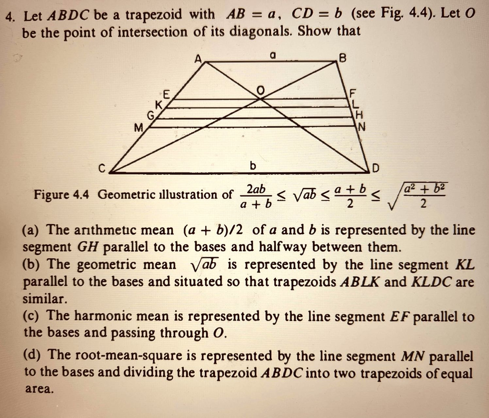
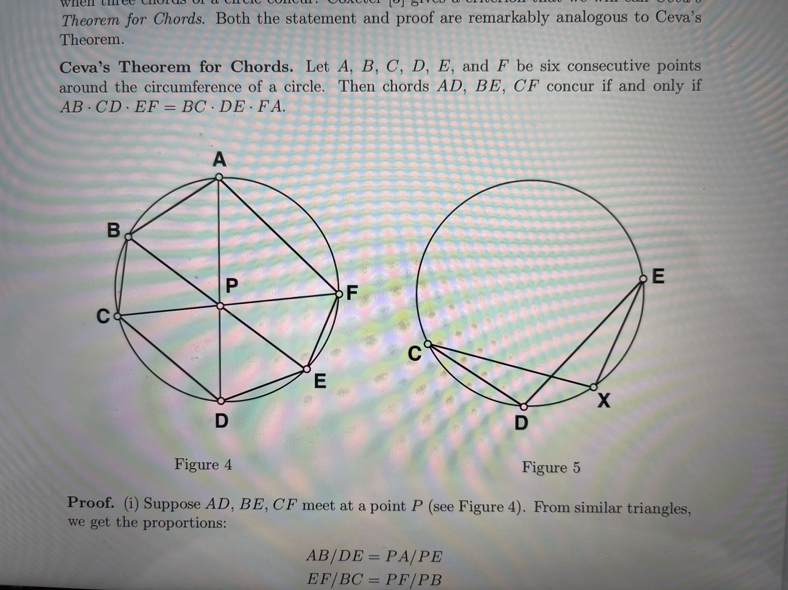

This is Kaihua, a math PhD and IMO medalist. I could help you if you are working on AMC 10/12, or preparing for AIME and USAMO/USAJMO. Even better, I am happy to discuss any math problems and answer questions just for the purpose of learning.
I help students learning math on two aspects:
Component 1: Provide guidance and comments to the students in a realtime fashion
Even the best students encounter various challenges when they learn math on their own time, such as
- a hard problem with no solution,
- the students understand the solution step-by-step, but have little idea where the solution comes from,
- a concept could be understood, but the students have difficulty to see its applications and connections with other concepts.
Typically, the students learn something and miss something all at once. When they come into the same concept next time, they would probably learn more. However, by providing the comments and guidance on these challenges on a realtime fashion, I help to make the learning process more efficient, and more satisfying for the students.
Most likely, I would come back to your questions towards the end of the day, given I have day job.
Component 2: Weekly 1-1 session for in-depth learning
For most students, the most efficient way to learn math is to listen to a lecture and do a few problems afterward. I offer the 1-1 sessions, tailoring to the need and level of the students. It could be going over the problems of the past AIME exams, or going over chapters on the AoPS books, or books focusing on one area of mathmatics, such as geometry, inequality and etc.
The session could be online, or in-person for students in New York City or Long Island.
I regularly post interesting math problems here. You are encouraged to reach out to share your solutions or ask for it. You are also welcome to reach out to me if you are interested in my tutoring service.
Text/WhatsApp: 917-754-0988, or email kaihua.cai@gmail.com
Before you look at the problem, I like to recommend a book "Over and Over Again" by Professor Gengzhe Chang, who taught me Calculus, and his colleague Professor Thomus W. Sederberg. It is an enlightening read, and introduces several important concepts and techniques of advanced mathematics to high school students.
Interesting problems to solve:
Problem No. 1
Use +, -, *, /, (, and ) on each of the following four integers to produce 24
- 3, 3, 7, 7
- 4, 4, 7, 7
- 4, 4, 10, 10
For example, for 1,5,5,5, the answer is (5 - 1/5) * 5 = 24
Problem No. 2
Problem No. 3
Problem No. 4
$$ F(z) = \frac {z-i}{z+i}$$ $z_0 = \frac {1}{137} + i$, $z_k = F(z_{k-1})$ what is the value of $z_{2002}? $